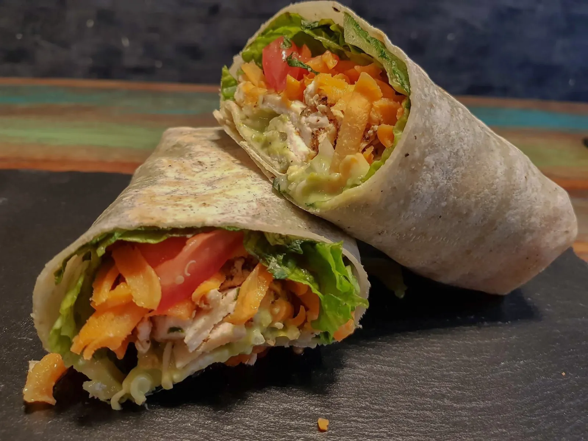
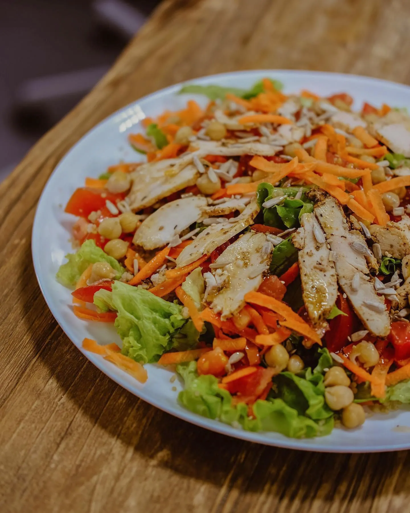
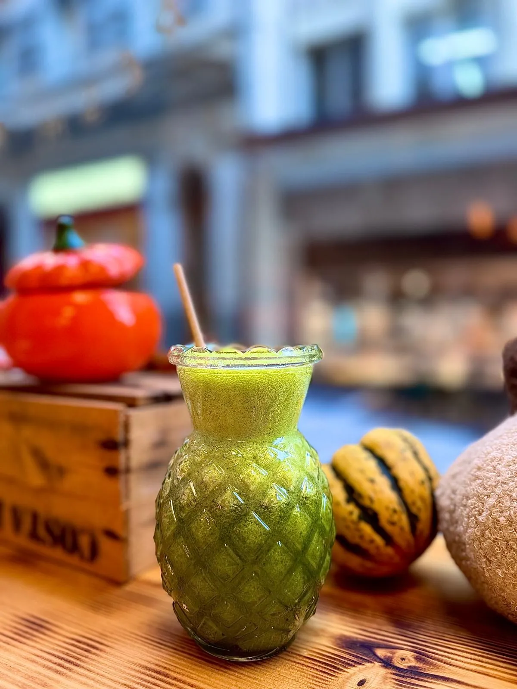
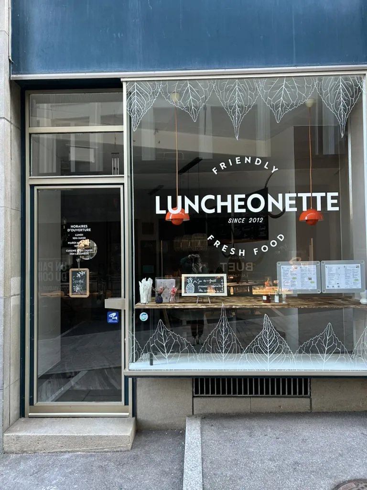
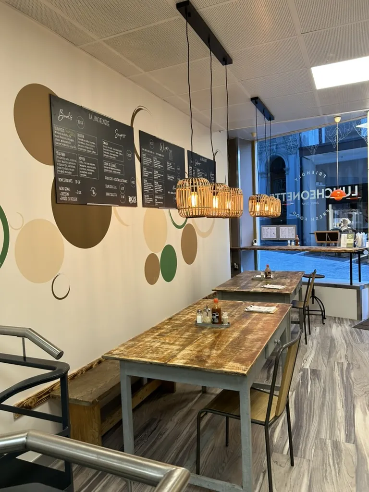
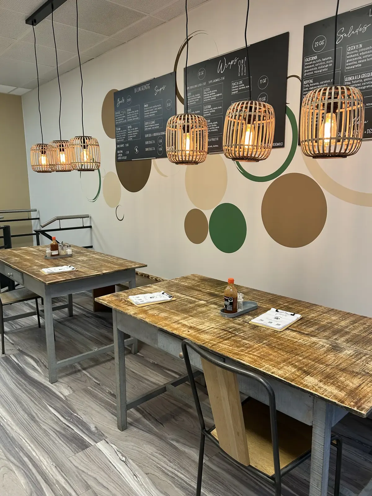

LuncheonetteTes plats préférés, sains et équilibrés.
Un burrito healthy ou un bowl original entre collègues, en famille ou avec des amis, au centre de Lausanne. Sur place ou à emporter.


Un concept simple
Flexitarien dans l'âme
Tout est mis en œuvre pour proposer des options végétariennes, véganes ou sans gluten, en gardant le goût et l'originalité des plats.
- Des produits les plus locaux possible, certains en version bio
- Des suggestions du moment de saison, aux saveurs originales
- Des prix abordables : on peut manger sainement et rapidement
- Commande en ligne, à venir chercher à l'heure voulue
Traiteur
Luncheonette@work
Un business lunch, une formation, une occasion à fêter : une pause fraîcheur pour tes collègues, tes amis ou ta famille, flexitarienne, végétarienne ou sans gluten.

Tout le monde parle de la Luncheonette
- 24 heures
- RTS
- Le Temps
- Femina
- The Lausanner



Rue Grand-Saint-Jean 5
Où nous trouver ?
En plein centre-ville de Lausanne, une belle option pour un lunch rapide et de qualité pour tous.
- Adresse
- Rue Grand-Saint-Jean 5
1003 Lausanne - Heures d'ouverture
- Lundi10:00 – 14:30Mardi – samedi10:00 – 17:00Cuisine salée11:15 – 14:30 (15 h le samedi)Dimanchefermé